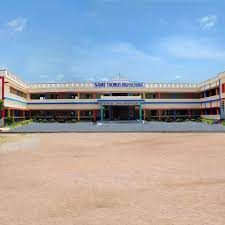

Welcome to St. Thomas E/M High School Jammikunta, where education meets excellence!
At St. Thomas, we are dedicated to providing a nurturing and challenging learning environment for our students. Our mission is to empower each child to achieve academic success, foster a love for learning, and develop into responsible, compassionate individuals.
Established in 2001, St. Thomas E/M High School Jammikunta has been a beacon of education in our community for [Number of Years] years. Over the years, we have built a legacy of academic achievement, extracurricular excellence, and community engagement.
Our school campus boasts state-of-the-art facilities that enhance the learning experience. From modern classrooms to well-equipped laboratories, sports facilities, and a library, we provide an environment that inspires curiosity and exploration.
The St. Thomas family is made up of dedicated educators, support staff, and administrators who are passionate about shaping the future of our students. Our experienced and compassionate team is committed to fostering a love for learning and preparing students for success in a rapidly changing world.
We believe in the power of community and actively engage with parents, guardians, and the local community. Together, we create a supportive network that nurtures the growth and development of every child.
Join us at St. Thomas E/M High School Jammikunta – where every student is encouraged to dream, learn, and achieve!
For more information or to schedule a visit, please contact us or visit our Admissions page.